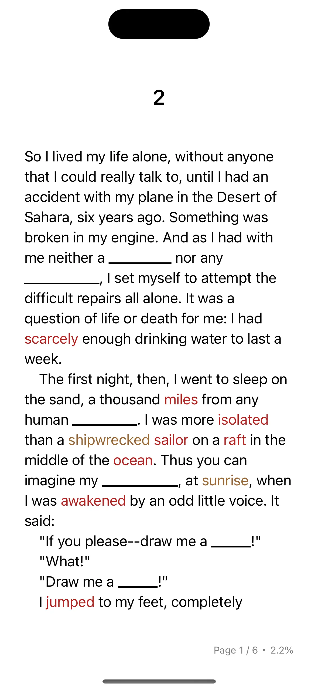
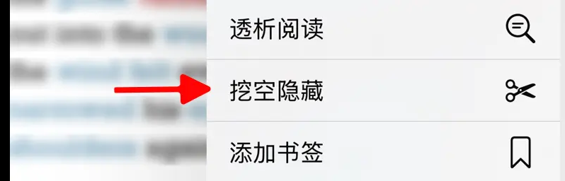

Cloze Mode covers words you’ve learned or added to your vocabulary list while reading. When you encounter a covered word, try to infer its meaning from context before revealing the answer. This “active recall” approach helps reinforce vocabulary memory in authentic reading contexts.


Restrictions
This feature supports text and PDF format books. PDF format requires TingYue version 8.10.03 or later.
How to Enable
- Open the ebook you want to read
- Tap the
 icon in the top menu bar to enter Cloze Mode settings
icon in the top menu bar to enter Cloze Mode settings- If this icon is not visible in the top menu, tap
 , then select “Cloze Mode”
, then select “Cloze Mode”
- If this icon is not visible in the top menu, tap
- Toggle the switch to enable Cloze Mode
Options
- Learnings Added from Current Book Only: Only covers learning content added in the current book
- Words from Wordbook: Also covers words in your vocabulary list
Usage Scenarios
Cloze Mode is ideal for reviewing learned vocabulary while continuing to read, transforming vocabulary learning from passive memorization to active application.
Steps
Enable the feature: Select your vocabulary source (current book’s learning items or vocabulary list)
Active recall: When you encounter a covered word while reading, don’t rush to reveal the answer. Try to infer its meaning and usage from context. This process activates your memory
Verify understanding: Tap the covered area to reveal the answer and compare your guess with the actual word. If different, reflect on why—was it an unfamiliar word or a misunderstanding of the context?
Reinforce through repetition: The same word may appear and be covered multiple times throughout the book. Each encounter is an opportunity to reinforce your understanding. Repeated exposure in different contexts helps build a more comprehensive vocabulary
Tips
- Start with books you’re already familiar with to avoid disrupting your reading experience with too many unfamiliar words
- Keep the number of covered words moderate—around 5%-10% of total vocabulary is recommended
- If you consistently struggle to recall a particular word, mark it for focused review